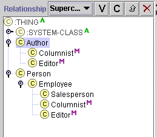
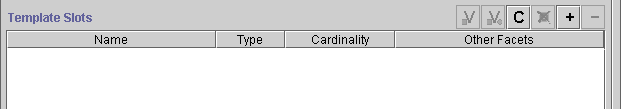
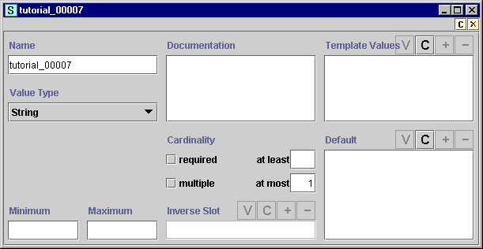
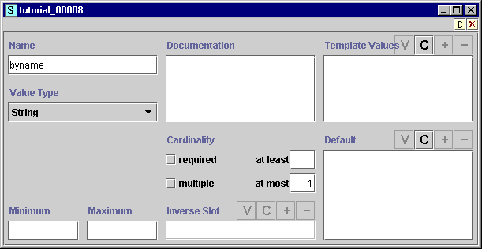
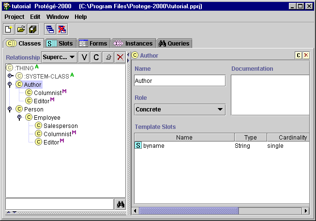
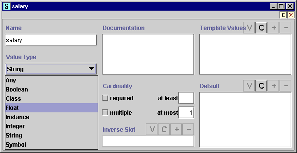
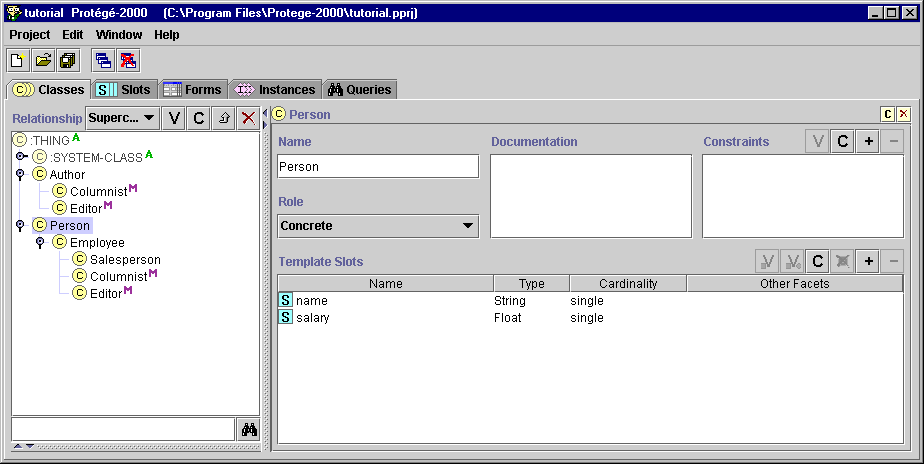
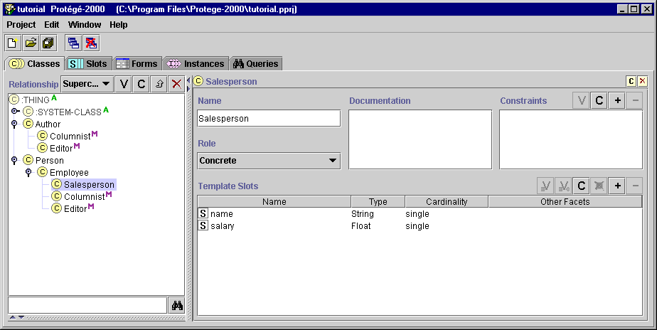

Creating and Naming Slots
Creating and Naming Slots

You now have several classes in your project. You can assign attributes to
these classes by creating slots. In this section you will:
- Create a basic slot for the Author class.
- Create a basic slot for the Person class.
- Create a Float slot for the Person class.
- View how a class with multiple superclasses
inherits from both of them.
To create a slot for the class Author:
- Select Author in the Class Relationship pane.

- Click the Create
 button at the far right of the Template Slots pane.
button at the far right of the Template Slots pane.

- The Slot Form is displayed.

- To name the slot, highlight the generic name in the Name field. Type the
name for the slot, byname. A recommended convention to make slot
names lowercase, with words separated with an underscore.
Making slots names lowercase, while making classes start with an uppercase
letter, helps you distinguish them in your ontology.

- This slot will be a string slot, that is, a slot that takes values that
are any string of alphanumeric characters, possibly including
spaces. For this simple slot, we will not change any of the other fields in
the Slot Form. Simply close the form and return to the main window. Notice
that your slot now appears in the Template Slots pane when Author is
highlighted.

The blue slot icon indicates that the slot is "direct",
that is, it was created directly on the selected class. You can edit a
direct slot by double-clicking on it to open the slot form.
We will now create two slots for the Person class. To create a string
slot for Person:
- Click on Person in the Class Relationship Pane.
- Click the Create
button at the far right of the Template Slots pane.
- Change the slot name to name in the Slot Form.
- Exit the Slot Form.
To create the next slot, which will be of Type Float:
- Make sure Person is still selected in the Class Relationship Pane.
- Click the Create
button at the far right of the Template Slots pane.
- Change the slot name to salary in the Slot Form.
- Select Float from the Value Type menu.

A Float is a floating point integer. Values that are entered for this slot
must be valid floating point numbers.
- Exit the slot form. You now see two direct slots for Person.

Slots and Inheritance
The slots you create at a class are inherited by all their classes. To see
this, click on Salesperson. You will see the slots you created for Person.
Notice that the slot icons are now white, to indicate that these slots are
inherited.

Now, click on Columnist. You see that Columnist inherits slots
from both Person (via Employee) and Author. This multiple
inheritance is an essential part of Protégé.
You have now created some simple slots. This is all you need to enter some
instances and begin creating your knowledge base.
Next: Entering Instances
Getting Started With Protégé